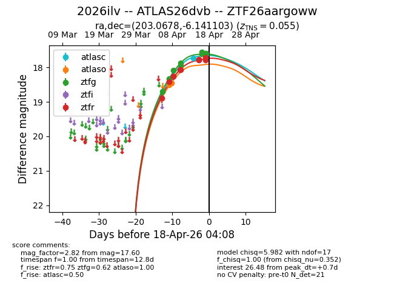
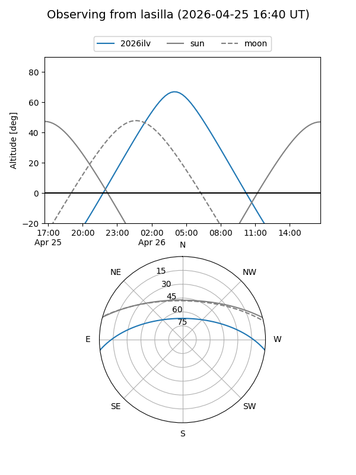
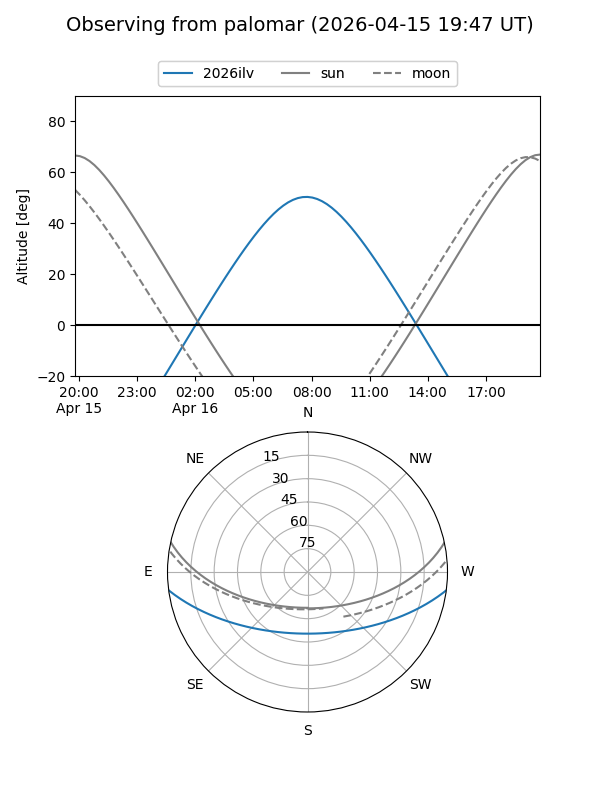
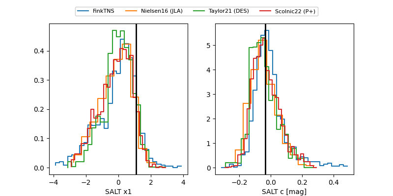

2026ilv
Target 2026ilv at 2026-04-18 04:13
Aliases and brokers:
FINK: link
Lasair: link
ALeRCE: link
TNS: link
YSE: link
alt names
ZTF26aargoww (ztf,fink_ztf)
2026ilv (tns,yse)
ATLAS26dvb (atlas)
Coordinates:
equatorial (ra, dec) = 203.0678,-6.14110
equatorial (HMS+DMS) = 13:32:16.27,-06:08:27.97
galactic (l, b) = (320.9606,+55.29488)
Flags:
confirmed ia
Photometry:
last atlasc=17.73, atlaso=18.46, ztfg=17.60, ztfr=17.79
1 atlasc, 2 atlaso, 9 ztfg, 9 ztfr detections
Lightcurve

Visibility


Additional plots
